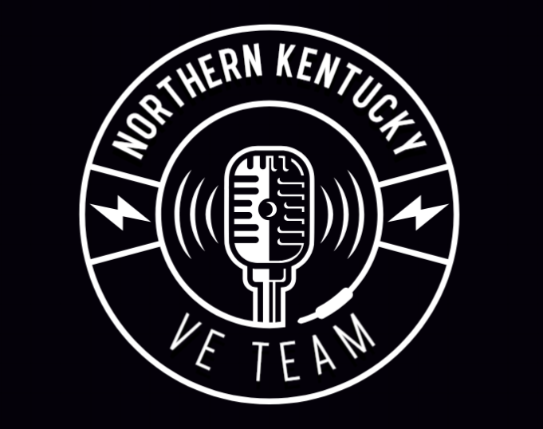
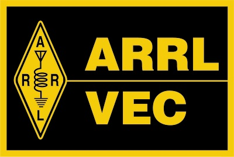

  Northern Kentucky
Serving Northern Kentucky, Southeast Indiana and Southwest Ohio, the Northern Kentucky VE Team (NKY-VE) offers in-person license exams for anyone interested in earning their first amateur radio license, and for existing license holders who wish to upgrade to a higher license class. Exam sessions are generally scheduled at 5:30 PM on the third Monday of each month. Candidates are welcome to stay for the Northern Kentucky Amateur Radio Club general meeting at 7:00 PM. It's a great opportunity to meet other hams from the Tri-State area and to connect with elmers who can answer your questions, whether technical or non-technical. Individuals who pass the Technician license exam at an NKY-VE exam session are eligible for free NKARC membership for the remainder of the current calendar year.
Exam Location
Bethesda Community Church
989 East Mount Zion Road
Independence, KY 41051
Registration Required
To attend an exam session, please register at the link below. Walk-ins are not accepted. If the session appears as “full”, please check again closer to the exam date,
as we frequently have last-minute cancellations.
https://hamstudy.org/sessions/NKY-VE
What to Bring
A list of what you should and should not bring to the exam session can be found at www.arrl.org/what-to-bring-to-an-exam-session. This information is very important -- make sure you read it! Of primary importance is the FCC Registration Number (FRN). If you do not have an FRN, you will not be able to take an exam. If you hold a GMRS license, you already have an FRN -- you do not require a new one. If you are upgrading, you must bring proof of your current license.
Fees
ARRL Exam Session Fee
The ARRL charges an exam session fee of $15. This fee is reduced to $5 if the candidate is under 18 years of age.
Payment is made at the exam session by cash or PayPal. This fee is not refundable if the candidate fails to pass the exam.
FCC Application Fee
The FCC charges a $35 application fee to all first-time licensees. This fee is paid directly to the FCC. Upon receiving a license application
from the ARRL, the FCC will email a link with payment instructions directly to the candidate. The candidate will have 10 calendar days,
from the date of the application file number being issued, to pay. After the fee is paid, and the FCC has processed an application, examinees will receive a
second email from the FCC with a link to their official license. More information can be found here:
https://www.arrl.org/fcc-application-fee
The ARRL will cover the one-time $35 FCC application fee for new license candidates younger than 18 years of age for tests administered by NKY-VE. The $35 FCC application fee will be reimbursed after the new license has been issued by the FCC. The reimbursement check will be mailed by the ARRL directly to the fee payer.
Frequently Asked Questions
Q. How can I prepare for the exam?
A. Click here for information about available resources.
Q. If I fail an exam, can I immediately re-take it?
A. This is at the discretion of the VE Team Lead. If time allows, re-takes are usually permitted, but the candidate will be required to pay
another $15 fee.
Q. If I pass an exam, can I immediately take the exam for the next highest license class?
A. This is at the discretion of the VE Team Lead, but is typically permitted. Please indicate your intent to take the additional exam(s) at time of registration.
No additional fee is required.
Q. How soon after passing the exam do my new privileges take effect?
A. Exam results are typically uploaded to the ARRL the same day the exam is passed. The ARRL usually takes one or two business days to process
the results before uploading to the FCC. The examinee's license data should appear in the FCC database
(https://www.fcc.gov/wireless/universal-licensing-system)
within a few hours after that. If you are a new licensee, look for an email containing instructions in how to pay the FCC application fee (see "Fees" above).
Q. Can you accomodate my special needs?
A. The NKY-VE team endeavors to accomodate those with special needs. Please provide details in advance.
Q. Do you offer remote (Zoom) exams?
A. Not at the present time.
Q. Can I hold an amateur radio license if I have been convicted of a felony?
A. It depends. Be prepared to submit a statement explaining the circumstances to the FCC directly. They treat each case individually.
More information can be found at https://www.arrl.org/fcc-qualification-question.
Q. Do you offer exam sessions on other days and/or at other locations?
A. This can potentially be arranged, if there are at least 3 candidates interested in taking an exam.
Contact
If you have a question that is not covered above, please reach out to the NKY-VE Team Lead, Mark Volstad AI4BJ, at mvolstad@twc.com or 859-991-3906.